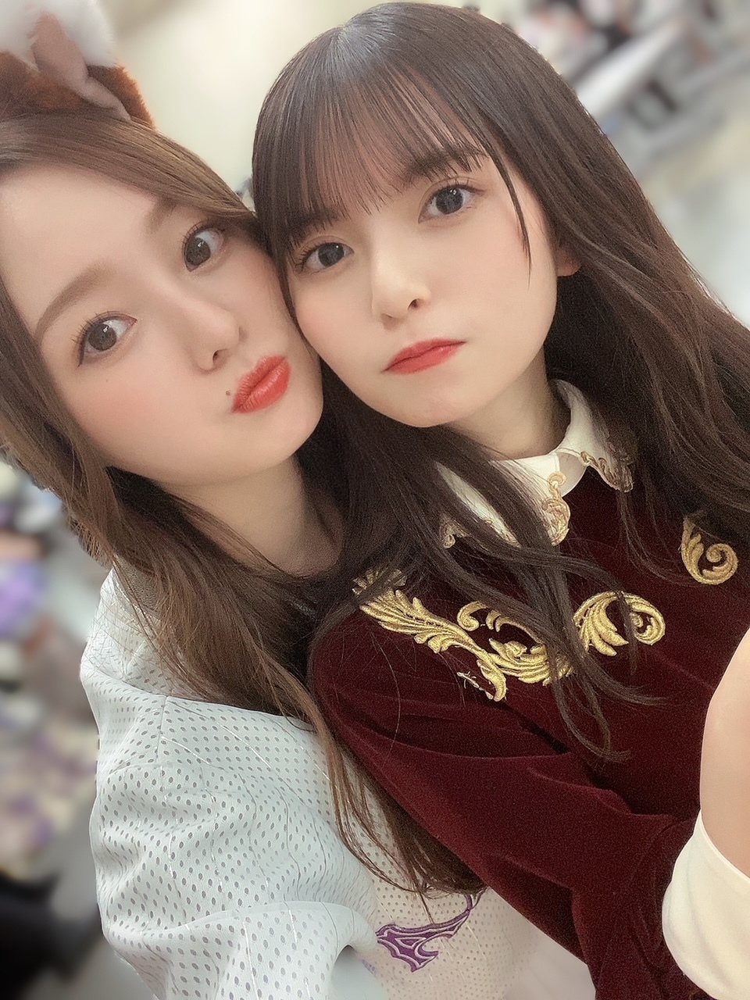
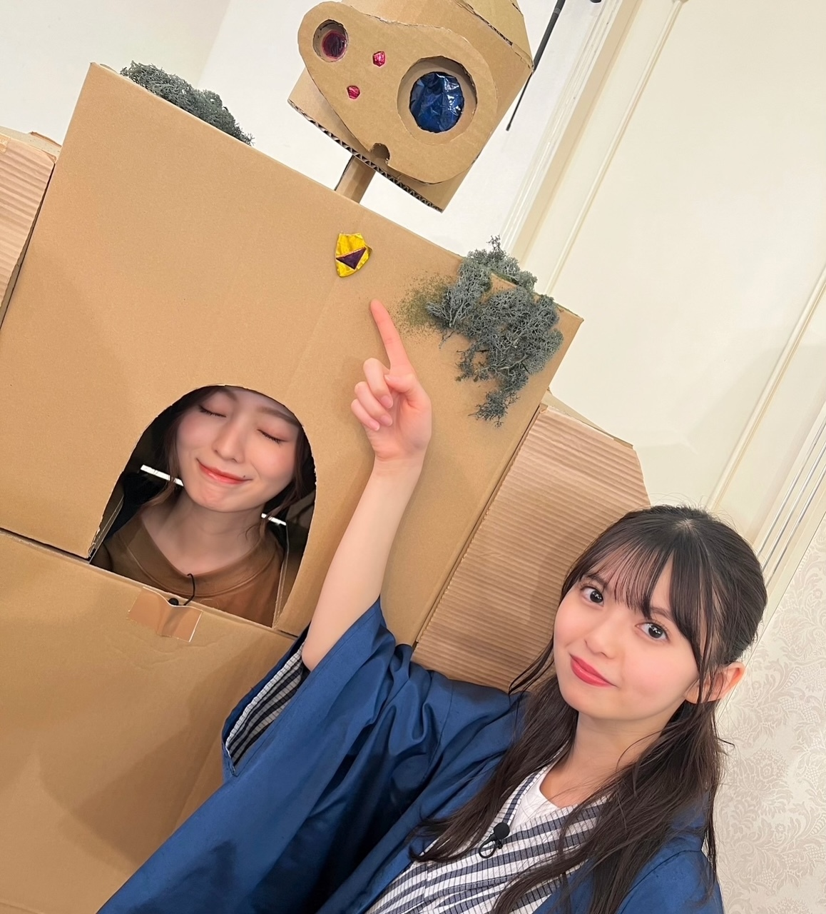
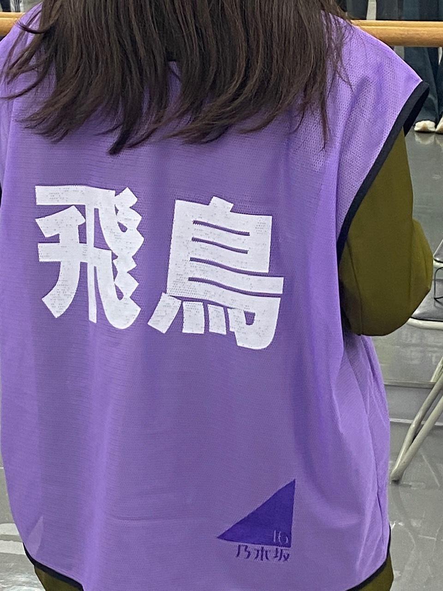
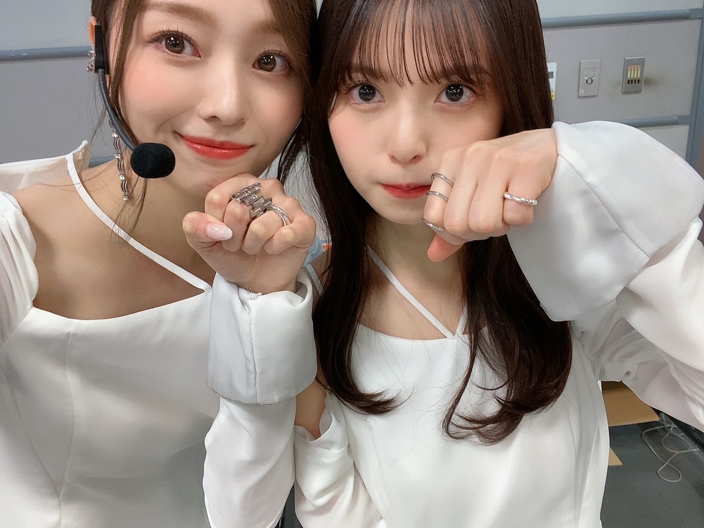
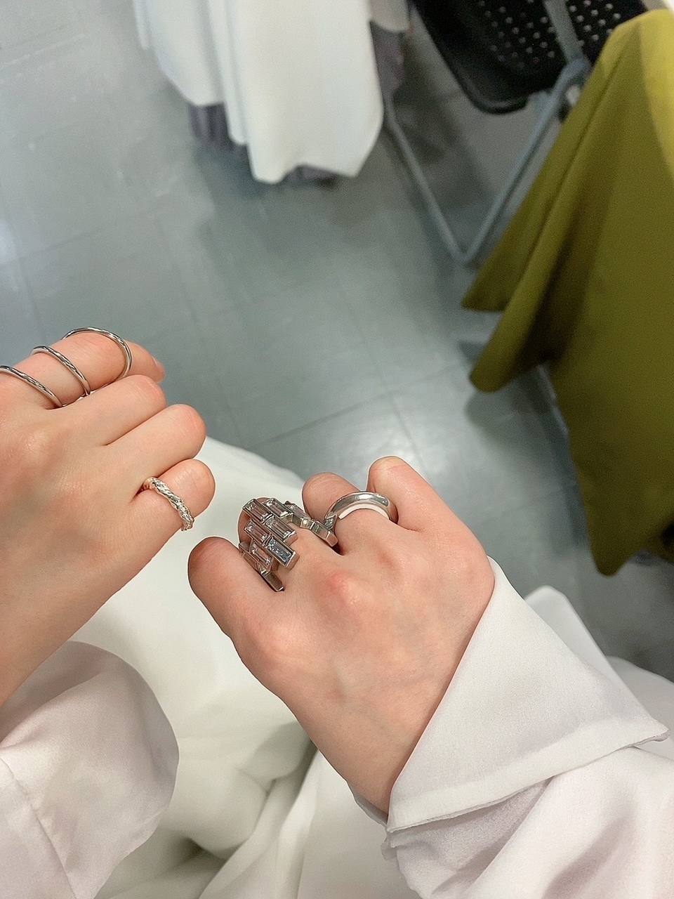

言葉が詰まるけど、これからもたくさん話せるから、大丈夫！
まあ怒涛な日々すぎて
３年くらい一気に凝縮してあるんじゃないかってくらいの１年でした。
何がそう思わせるのかよく分からないですが
皆様、本当にお疲れ様でした。

なーんか１２月は特に
たくさん付きまとっちゃった気がする！
わたしはたぶん
飛鳥さんがいなくなることで
ここで見せる 自分の人格をひとつ失うような、そんな気持ちです（笑）
大袈裟すぎる？
飛鳥さんがいたから出せた一面とか
出てくるテンション感とか 、あって、
そういうの引き出してくれる人だったから
すごく、寂しいとか以上に
結構これから何か変わっていきそうで、不安。
あ、でも
いい方向に持っていきたいとおもってますもちろん！

最後の置き土産として受け取ります
ロボット兵もね
本当に全部のチョイスが、天才！
あんまり多く語らない方だから
私もあんまり、なんとなく、
話すの控えたくて写真もね
でも最後くらい！
もう載せるタイミング無くなっちゃうのかなあ
１２月入ってから
会う度盗撮してました
全部はもちろん見せないし、
私の中に留めておきたいのもあるから

なんかこう、圧倒的でしたよね。
圧倒的な存在でした。
本人が一番、
けろっとしていたように見えた時もあったけど
でも、
珍しくカメラを構える姿を見ることが増えたり
密になっていったり
ちょっとうるってしてるのかな？って顔とか
そんなの見る度寂しかった！
感謝しかない、
梅澤美波としても。
これからも、変わらない距離にいてくれますように！
本当にお疲れ様でした飛鳥さん〜

リング交換してました実は
誰一人、気づいてないと思うけど(^^)
こういうの、すきなんです
すきというか こういうのって残るからさ意外と わたしの心には
飛鳥さんの小指のが、わたしの
わたしの薬指のが、飛鳥さんの（写真反転してるので右手です）

これからも、たくさん話聞いてもらうし、
私の家にも来てもらうので、
何も変わらない！(^^)
Original：https://www.nogizaka46.com/s/n46/diary/detail/101016?ima=4932&cd=MEMBER